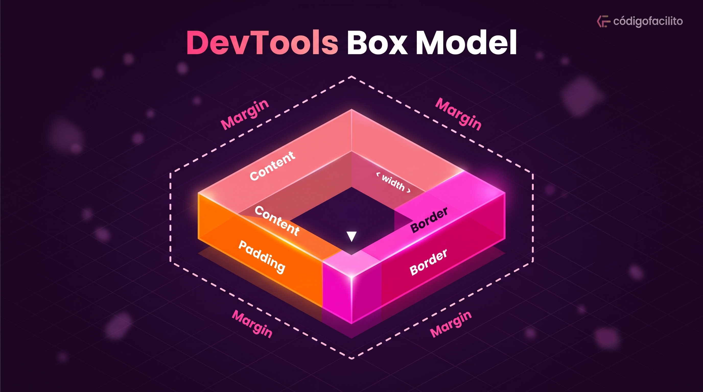

En CSS, cada elemento HTML se representa como una caja tridimensional compuesta por cuatro capas concéntricas que definen su tamaño y espaciado en la pantalla.
Representación visual adaptada con la paleta de colores corporativa (Azul petróleo, Turquesa y Dorado):

Es el núcleo donde se muestra el texto, imágenes o videos. Sus dimensiones se controlan con las propiedades width y height.
Es el espacio transparente que separa el contenido del borde de la caja. Este espacio adopta el color o imagen de fondo del elemento.
La línea que envuelve el padding y el contenido. Puede personalizarse en grosor, estilo (sólido, punteado, discontinuo) y color.
Es el espacio completamente transparente por fuera del borde que empuja y separa esta caja de otros elementos vecinos en la página.
box-sizing: border-box;
Por defecto en CSS, el padding y el border se suman al ancho total (width) de la caja, haciéndola más grande de lo esperado. Al aplicar box-sizing: border-box;, el navegador incluye el relleno y el borde dentro del ancho definido, facilitando enormemente el diseño responsivo.